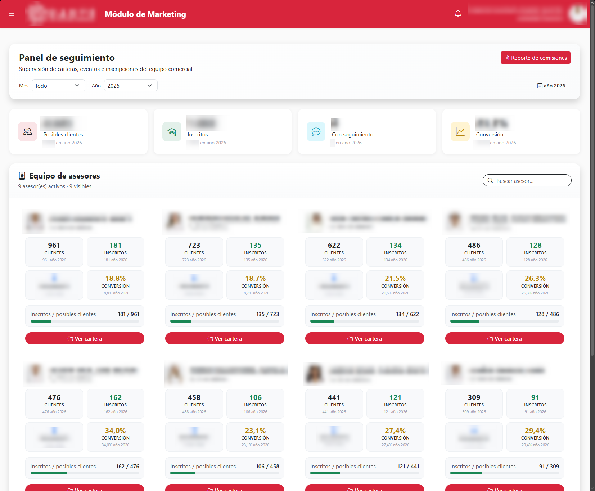

Contexto
En UTEPSA, marketing trabaja con personas que todavía no son estudiantes. Pregrado y postgrado no venden igual: uno cierra en inscripción y comisión; el otro necesita seguimiento continuo. Ese pipeline no puede vivir en una hoja compartida.
Caso 05
CRM interno · UTEPSA · Terminado
Dos negocios distintos en la misma universidad. Pregrado registra prospectos, inscribe y reporta comisiones. Postgrado sigue al posible cliente en el tiempo y saca un reporte cada semana.

En UTEPSA, marketing trabaja con personas que todavía no son estudiantes. Pregrado y postgrado no venden igual: uno cierra en inscripción y comisión; el otro necesita seguimiento continuo. Ese pipeline no puede vivir en una hoja compartida.
Sin un sistema interno, la oportunidad se pierde entre un mensaje, una llamada y un olvido. Pregrado necesita saber quién se inscribió y qué comisión corresponde. Postgrado necesita no soltar al prospecto y poder mostrar, cada semana, cómo va la cartera.
Como asistente de programación TI desarrollé el sistema de marketing de pregrado y de postgrado en Blazor y .NET. Pregrado: registro de posibles clientes, inscripciones y reporte de comisiones. Postgrado: seguimiento continuo de prospectos y reportes semanales.
Blazor en el frente. SQL Server como fuente de verdad: persona, origen, estado, inscripción, comisión, seguimiento. Los reportes leen ese modelo. Pregrado y postgrado comparten stack, no el mismo embudo.
Marketing tiene un lugar para el prospecto: se registra, se inscribe o se sigue, y se reporta. Pregrado cierra el ciclo hasta la comisión. Postgrado no pierde el hilo de la semana. Un CRM que se parece al negocio educativo, no a un producto genérico de ventas.
Un CRM interno fracasa si pide más campos de los que el equipo va a llenar. Pregrado y postgrado no se resuelven con la misma pantalla: el ritmo del seguimiento es el diseño.